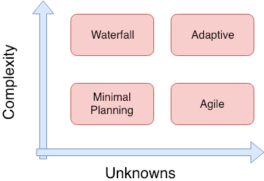

Building successful hardware is too often a gamble. When you’re building something new-to-the-world, this is only more true.
Known unknowns can be challenging, but addressable: how to engineer new form factors, new technology, and new features.
However, being aware of unknown unknowns is often what determines a win or a loss. These crop up over time, like changes in the competitive landscape, emergence of new technologies that are relevant to your product, or the performance of a key partner, like a manufacturer.
Given both kinds of unknowns, it can be difficult to answer some of the most important questions when developing a product:
Will the product deliver on our vision for our customers?
Will we reach our business goals?
It’s a great idea, but can we build and ship it within our constraints?
Most companies answer these questions with great enthusiasm (“of course it’ll deliver on our vision!”). Then they spec the whole product, get the engineers to divvy up the work, build for nine or twelve months, and then — after a half dozen delays — succumb to the pressure of shipping something, and hope that it’s a home run.
Welcome to The Hardware Trap.
You’re so focused on building something over a long period of time, and so time-crunched, that you’re not paying much attention to new inputs that are coming from customers, the market, and your engineering team. As it turns out, these inputs aren’t distractions, but are the very thing that will enable you to build the right thing within your constraints, and reach your goals.
I propose an approach based on a few processes that will dramatically improve your chances of success and diminish the risks associated with developing hardware.
Process #1: Adaptive project management
Agile was pioneered for software development, and there are some obvious roadblocks when applying agile techniques to hardware. You can’t do a hardware build every week or two
Adaptive Project Management is the paradigm what makes the most sense for hardware product development.
When describing what it was like to write a novel, writer E.L. Doctorow said, “…like driving a car at night: you never see further than your headlights, but you can make the whole trip that way.”
Hardware product development is very much the same. We don’t have complete knowledge of the project, we don’t have a detailed map (like with waterfall), but you know where you want to go and need to focus on what’s right in front of you in order to move forward.
What is Adaptive Project Management?
- 1. The most important focus is on reducing risk early (whatever point you’re working on, reduce risk at that point). Examples of reducing risk: build a prototype, create a mitigation plan (when you can’t test), etc.
- 2. Includes sufficient planning so that you know the team is always working on the correct tasks, but no more planning than that (like waterfall-style planning but without the same amount of precision).
- 3. Focus on the critical path and long lead time items (but not at the expense of risk reduction). An example includes ordering the part you know is going to take 14 weeks to get here is accounted for in the critical path.
To build you Adaptive Project Management plan, you need to:
- 1. Understand your greatest risks and how to reduce them (this is the most major point of the adaptive paradigm).
- 2. Set your milestones and build a plan to achieve them. Examples of milestones can include investor meeting, conference, board meeting, etc.
- 3. Get it in the ballpark; focus on accuracy rather than precision e.g., that should take about two days vs. figuring out exact number of hours. You can’t focus on precision because you’re constantly rebuilding your plan due to the amount of uncertainty. Some days you’ll overshoot, others you’ll undershoot but it should average out.
- 4. As your understanding increases, so should the detail in your plan.
Communication rules in the Adaptive Project Management paradigm:
- 1. Communicate status to the stakeholders regularly and clearly so they know things are changing.
- 2. Make sure that team members have the information they need to do their jobs.
- 3. Agile Scrum daily standup meetings are useful.
It may sound obvious, but the relative importance of different aspects of a product are often unclear to engineers, so they wind up working on what’s challenging, interesting, or what makes progress (none of which are necessarily the most important).
Fast sprints to build prototypes are nothing new, but we find what’s not as obvious is building hardware prototypes to be used by customers as close to the context of actual use as possible. For example, if you’re building a pressure sensitive stylus, you also need a drawing app to test it, versus less direct ways to measure its performance.
In addition, regular feedback loops between customers, business objectives and engineering mean that you’re validating your product as you go. And consistent check-ins to incorporate feedback gives you the opportunity to course correct when necessary.
To put it succinctly: adaptive is all about building an MVP of the most important stuff first, and continually validating those aspects of your product with your customers and your team.
With that concept increasingly widespread, here’s where teams often fail to deliver:
- 1. They don’t align the entire team on the most important aspects of the product early enough (or at all)
- 2. They don’t effectively reconcile competing priorities and constraints throughout development
Make sure you agree on the top features, and then have the engineering team focus on those, one by one, only moving down the feature list once you know it can be built and that customers are liking what you’re building. Develop a sense for when there is unresolved tension on your team as a result of different priorities–those won’t get easier to resolve later in development.
Process #2: High quality user feedback
A lot of hardware development teams are driven by a strong vision, and adopt a mentality of if you build it they will come. Does this happen in software?
Not usually.
Software companies ship and survey their products in the real world as often as they can. Though hardware has the (not so) small disadvantage of not easily updating the product in the field like software, the spirit of hardware development should be no different.
Real-world testing as early as possible is key to a successful agile approach. And it’s completely possible with hardware.
Often, lessons are gleaned that could have informed development plans had it been done earlier in the process. Doing this will also keep key stakeholders aligned, as priorities can be affected when the product hits the real world.
Process #3: Capable, communicative engineers
Last but not least, the foundation of using agile techniques and the incorporation of feedback is the pure horsepower of your engineering team.
Whenever you’re building something truly new, there will be tough technical challenges, and all bets are off if you can’t effectively navigate them within all your constraints. Technical expertise is obviously a requirement to build something challenging and new.
If you’re a CEO or VP Engineering, you know your success isn’t just contingent on building something. Working with engineers who are not only technically strong, but also excellent communicators and collaborators will facilitate critical communication within your team.
Following these guidelines and doing things right could make the difference between shipping a great product on time, or not shipping at all.
3 Comments